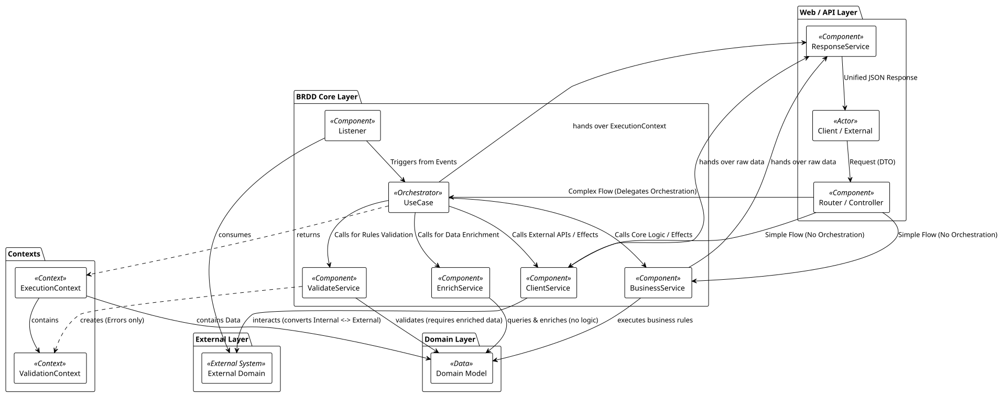
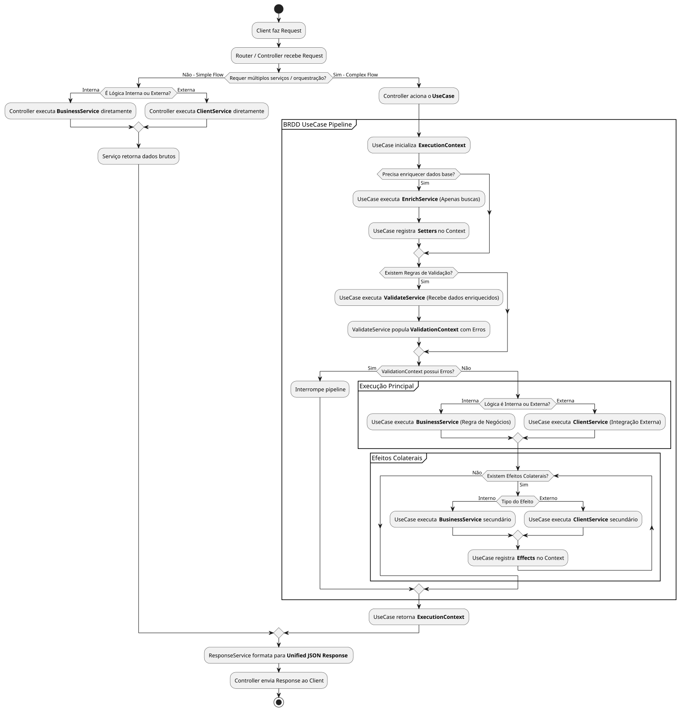
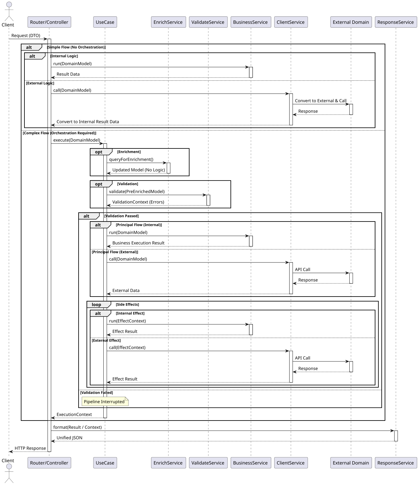
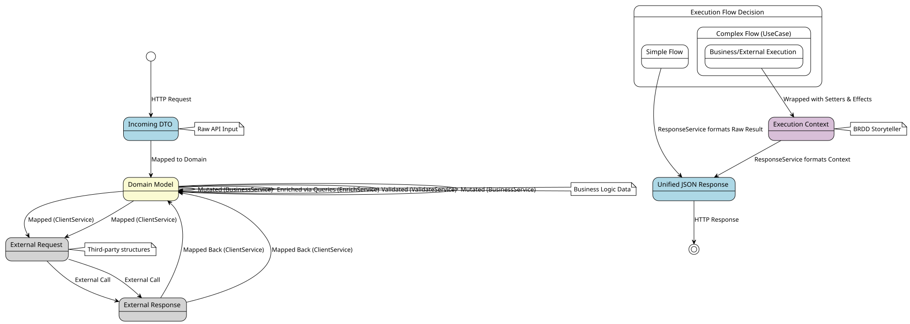
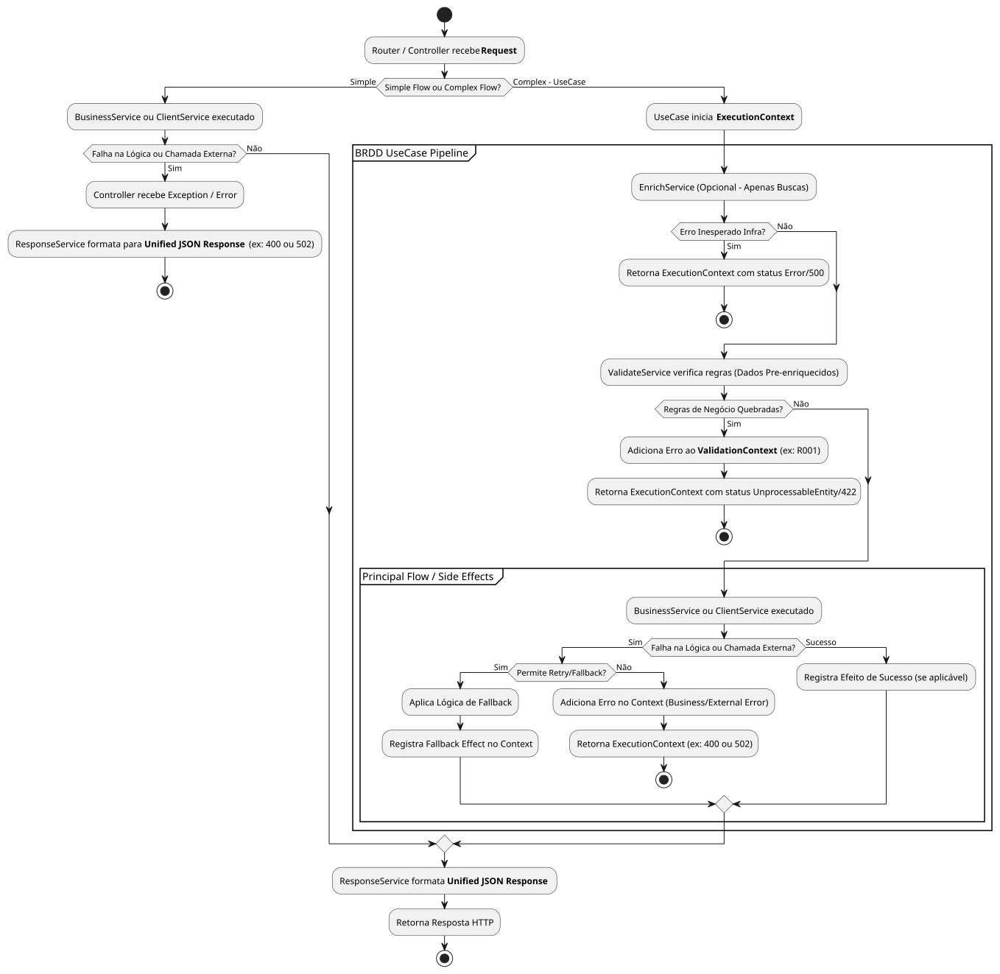
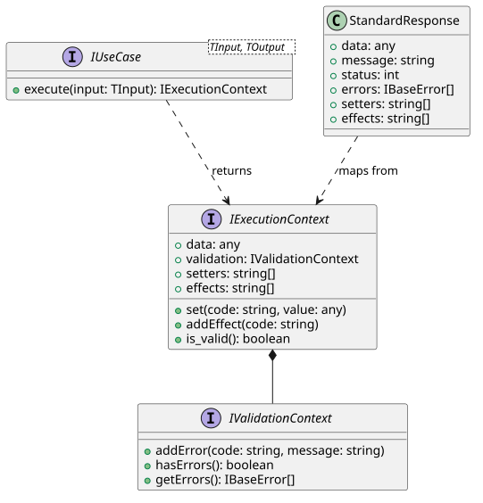

These PlantUML diagrams detail the internal workflows and architecture of the BRDD pattern. You can copy the code and render it using the PlantUML Web Server or a local IDE extension.
Shows layers, responsibilities, and relationships between components.

@startuml High_Level_Architecture
!theme plain
skinparam componentStyle rectangle
package "Web / API Layer" {
[Client / External] <<Actor>>
[Router / Controller] <<Component>>
[ResponseService] <<Component>>
}
package "BRDD Core Layer" {
[UseCase] <<Orchestrator>>
[ValidateService] <<Component>>
[EnrichService] <<Component>>
[BusinessService] <<Component>>
[ClientService] <<Component>>
[Listener] <<Component>>
}
package "Domain Layer" {
[Domain Model] <<Data>>
}
package "Contexts" {
[ExecutionContext] <<Context>>
[ValidationContext] <<Context>>
}
package "External Layer" {
[External Domain] <<External System>>
}
[Client / External] --> [Router / Controller] : Request (DTO)
' Simple Flow Bypass
[Router / Controller] --> [BusinessService] : Simple Flow (No Orchestration)
[Router / Controller] --> [ClientService] : Simple Flow (No Orchestration)
' Complex Flow
[Router / Controller] --> [UseCase] : Complex Flow (Delegates Orchestration)
[UseCase] --> [ValidateService] : Calls for Rules Validation
[UseCase] --> [EnrichService] : Calls for Data Enrichment
[UseCase] --> [BusinessService] : Calls Core Logic / Effects
[UseCase] --> [ClientService] : Calls External APIs / Effects
[Listener] --> [UseCase] : Triggers from Events
[ValidateService] ..> [ValidationContext] : creates (Errors only)
[ValidateService] --> [Domain Model] : validates (requires enriched data)
[EnrichService] --> [Domain Model] : queries & enriches (no logic)
[BusinessService] --> [Domain Model] : executes use case action
[ClientService] --> [External Domain] : interacts (converts Internal <-> External)
[Listener] --> [External Domain] : consumes
[UseCase] ..> [ExecutionContext] : returns
[ExecutionContext] --> [ValidationContext] : contains
[ExecutionContext] --> [Domain Model] : contains Data
[UseCase] --> [ResponseService] : hands over ExecutionContext
[BusinessService] --> [ResponseService] : hands over raw data
[ClientService] --> [ResponseService] : hands over raw data
[ResponseService] --> [Client / External] : Unified JSON Response
@endumlThe step-by-step execution path when a request enters the system.

@startuml Core_Sync_Flow
start
:Client faz Request;
:Router / Controller recebe Request;
if (Requer múltiplos serviços / orquestração?) then (Não - Simple Flow)
if (É Lógica Interna ou Externa?) then (Interna)
:Controller executa **BusinessService** diretamente;
else (Externa)
:Controller executa **ClientService** diretamente;
endif
:Serviço retorna dados brutos;
else (Sim - Complex Flow)
:Controller aciona o **UseCase**;
partition "BRDD UseCase Pipeline" {
:UseCase inicializa **ExecutionContext**;
if (Precisa enriquecer dados base?) then (Sim)
:UseCase executa **EnrichService** (Apenas buscas);
:UseCase registra **Setters** no Context;
endif
if (Existem Regras de Validação?) then (Sim)
:UseCase executa **ValidateService** (Recebe dados enriquecidos);
:ValidateService popula **ValidationContext** com Erros;
endif
if (ValidationContext possui Erros?) then (Sim)
:Interrompe pipeline;
else (Não)
partition "Execução Principal" {
if (Lógica é Interna ou Externa?) then (Interna)
:UseCase executa **BusinessService** (Ação Principal do Caso de Uso);
else (Externa)
:UseCase executa **ClientService** (Integração Externa);
endif
}
partition "Efeitos Colaterais" {
while (Existem Efeitos Colaterais?) is (Sim)
if (Tipo do Efeito) then (Interno)
:UseCase executa **BusinessService** secundário;
else (Externo)
:UseCase executa **ClientService** secundário;
endif
:UseCase registra **Effects** no Context;
endwhile (Não)
}
endif
}
:UseCase retorna **ExecutionContext**;
endif
:ResponseService formata para **Unified JSON Response**;
:Controller envia Response ao Client;
stop
@endumlThe temporal sequence of calls between objects.

@startuml Sequence_Diagram
actor Client
participant "Router/Controller" as Controller
participant UseCase
participant EnrichService
participant ValidateService
participant BusinessService
participant "ClientService" as ExtClient
participant "External Domain" as ExtAPI
participant ResponseService
Client -> Controller: Request (DTO)
activate Controller
alt Simple Flow (No Orchestration)
alt Internal Logic
Controller -> BusinessService: run(DomainModel)
activate BusinessService
BusinessService --> Controller: Result Data
deactivate BusinessService
else External Logic
Controller -> ExtClient: call(DomainModel)
activate ExtClient
ExtClient -> ExtAPI: Convert to External & Call
activate ExtAPI
ExtAPI --> ExtClient: Response
deactivate ExtAPI
ExtClient --> Controller: Convert to Internal Result Data
deactivate ExtClient
end
else Complex Flow (Orchestration Required)
Controller -> UseCase: execute(DomainModel)
activate UseCase
opt Enrichment
UseCase -> EnrichService: queryForEnrichment()
activate EnrichService
EnrichService --> UseCase: Updated Model (No Logic)
deactivate EnrichService
end
opt Validation
UseCase -> ValidateService: validate(PreEnrichedModel)
activate ValidateService
ValidateService --> UseCase: ValidationContext (Errors)
deactivate ValidateService
end
alt Validation Passed
alt Principal Flow (Internal)
UseCase -> BusinessService: run(DomainModel)
activate BusinessService
BusinessService --> UseCase: Business Execution Result
deactivate BusinessService
else Principal Flow (External)
UseCase -> ExtClient: call(DomainModel)
activate ExtClient
ExtClient -> ExtAPI: API Call
activate ExtAPI
ExtAPI --> ExtClient: Response
deactivate ExtAPI
ExtClient --> UseCase: External Data
deactivate ExtClient
end
loop Side Effects
alt Internal Effect
UseCase -> BusinessService: run(EffectContext)
activate BusinessService
BusinessService --> UseCase: Effect Result
deactivate BusinessService
else External Effect
UseCase -> ExtClient: call(EffectContext)
activate ExtClient
ExtClient -> ExtAPI: API Call
activate ExtAPI
ExtAPI --> ExtClient: Response
deactivate ExtAPI
ExtClient --> UseCase: Effect Result
deactivate ExtClient
end
end
else Validation Failed
note over UseCase: Pipeline Interrupted
end
UseCase --> Controller: ExecutionContext
deactivate UseCase
end
Controller -> ResponseService: format(Result / Context)
activate ResponseService
ResponseService --> Controller: Unified JSON
deactivate ResponseService
Controller --> Client: HTTP Response
deactivate Controller
@endumlHow data mutates between layers.

@startuml Data_Transformation_Flow
!theme plain
skinparam state {
BackgroundColor<<External>> LightGray
BackgroundColor<<Core>> Thistle
BackgroundColor<<Domain>> LightGoldenRodYellow
BackgroundColor<<DTO>> LightBlue
}
state "Incoming DTO" as DTO <<DTO>>
state "Domain Model" as DomainModel <<Domain>>
state "External Request" as ExtReq <<External>>
state "External Response" as ExtRes <<External>>
state "Execution Context" as Context <<Core>>
state "Unified JSON Response" as UnifiedResp <<DTO>>
[*] --> DTO : HTTP Request
DTO --> DomainModel : Mapped to Domain
state "Execution Flow Decision" as FlowDec {
state "Simple Flow" as Simple {
DomainModel --> DomainModel : Mutated (BusinessService)
DomainModel --> ExtReq : Mapped (ClientService)
ExtReq --> ExtRes : External Call
ExtRes --> DomainModel : Mapped Back (ClientService)
}
state "Complex Flow (UseCase)" as Complex {
DomainModel --> DomainModel : Enriched via Queries (EnrichService)
DomainModel --> DomainModel : Validated (ValidateService)
state "Business/External Execution" as BusExtExec {
DomainModel --> DomainModel : Mutated (BusinessService)
DomainModel --> ExtReq : Mapped (ClientService)
ExtReq --> ExtRes : External Call
ExtRes --> DomainModel : Mapped Back (ClientService)
}
BusExtExec --> Context : Wrapped with Setters & Effects
}
}
Simple --> UnifiedResp : ResponseService formats Raw Result
Context --> UnifiedResp : ResponseService formats Context
UnifiedResp --> [*] : HTTP Response
note right of DTO : Raw API Input
note right of DomainModel : Business Logic Data
note right of ExtReq : Third-party structures
note right of Context : BRDD Storyteller
@endumlMapping behavior in case of validation failures or external API errors.

@startuml Error_Handling_Flow
start
:Router / Controller recebe **Request**;
if (Simple Flow ou Complex Flow?) then (Simple)
:BusinessService ou ClientService executado;
if (Falha na Lógica ou Chamada Externa?) then (Sim)
:Controller recebe Exception / Error;
:ResponseService formata para **Unified JSON Response** (ex: 400 ou 502);
stop
else (Não)
endif
else (Complex - UseCase)
:UseCase inicia **ExecutionContext**;
partition "BRDD UseCase Pipeline" {
:EnrichService (Opcional - Apenas Buscas);
if (Erro Inesperado Infra?) then (Sim)
:Retorna ExecutionContext com status Error/500;
stop
else (Não)
endif
:ValidateService verifica regras (Dados Pre-enriquecidos);
if (Regras de Negócio Quebradas?) then (Sim)
:Adiciona Erro ao **ValidationContext** (ex: R001);
:Retorna ExecutionContext com status UnprocessableEntity/422;
stop
else (Não)
endif
partition "Principal Flow / Side Effects" {
:BusinessService ou ClientService executado;
if (Falha na Lógica ou Chamada Externa?) then (Sim)
if (Permite Retry/Fallback?) then (Sim)
:Aplica Lógica de Fallback;
:Registra Fallback Effect no Context;
else (Não)
:Adiciona Erro no Context (Business/External Error);
:Retorna ExecutionContext (ex: 400 ou 502);
stop
endif
else (Sucesso)
:Registra Efeito de Sucesso (se aplicável);
endif
}
}
endif
:ResponseService formata **Unified JSON Response**;
:Retorna Resposta HTTP;
stop
@endumlCore interfaces based on the standard library implementations (TypeScript/C#/etc).

@startuml Class_Interface_Structure
interface IValidationContext {
+ addError(code: string, message: string)
+ hasErrors(): boolean
+ getErrors(): IBaseError[]
}
interface IExecutionContext {
+ data: any
+ validation: IValidationContext
+ setters: string[]
+ effects: string[]
+ set(code: string, value: any)
+ addEffect(code: string)
+ is_valid(): boolean
}
interface IUseCase<TInput, TOutput> {
+ execute(input: TInput): IExecutionContext
}
class StandardResponse {
+ data: any
+ message: string
+ status: int
+ errors: IBaseError[]
+ setters: string[]
+ effects: string[]
}
IExecutionContext *-- IValidationContext
IUseCase ..> IExecutionContext : returns
StandardResponse ..> IExecutionContext : maps from
@enduml